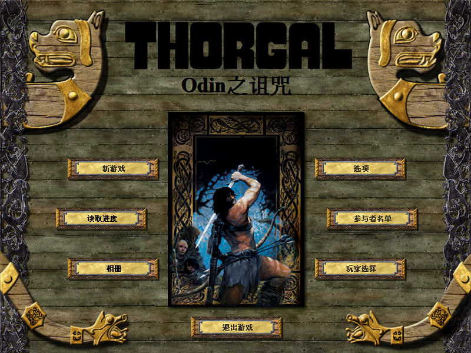
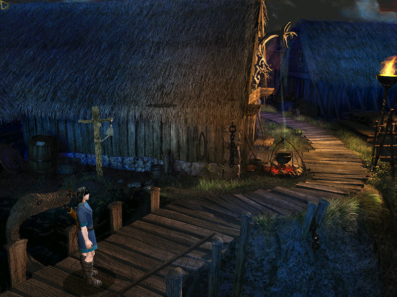

名稱：歐丁的詛咒／Odin之詛咒 (Thorgal: Odin's Curse／Curse of Atlantis，簡中／英文版) 簡介：Cryo 2002年出品的冒險解謎遊戲，由The Adventure Company代理發行 [待補]。

備註：本版為簡中漢化版（更新版未破解）。 保護：光碟，破解碼： THORGAL.exe 8A 45 F3 C6 45 FC 26 84 C0 A1 A4 12 (原始版) B0 00 90 90 90 90 90 -- -- B0 01 C3 F8 05 0F 94 C1 8A -- 03 -- -- -- -- 需拷貝光碟裡的MDecor、Local\English\Catalogs目錄到安裝目錄裡。 限制：檔案含歐洲字元，英文版只能在純英文環境上安裝（XP需設定語系為英文）。 備註：VirtualBox、VMware均無法正常執行（VMware+D3D Windower勉強可以），建議使用 Win64+dgVoodoo2（需使用更新檔）。 備註：簡中漢化版需在簡中系統上執行，否則部份文字會亂碼。 檔案：Thorgal_Odins_Curse_Patch.rar = 更新檔 chs.rar = 簡中漢化檔